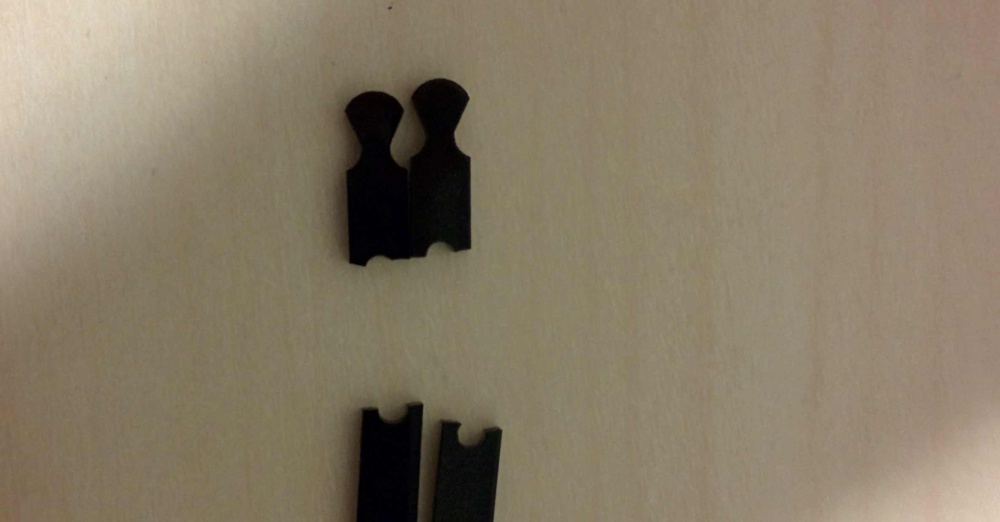

I've upgraded the Kossel as I do more and more prints on it, in order to improve print quality as well as ease of use.

Fixes
After two weeks of moderate printing on the Kossel, two of the pieces of the extruder assembly silently failed. These two parts are what the binder clip attaches to in order to press the filament in to the extruder gear. Under the strain they seemed to slowly flex until finally cracking and causing me a lot of extruder grief. Luckily, I was able to glue them back together as a single sturdier component that will hopefully hold up.
Spool Holder
After a few days it became apparent that I really needed a spool holder on the printer. For a while I was just using a broom on chairs, but chairs are in short supply inside our apartment. I printed a simple holder from Thingiverse but was dissapointed to find there were issues with the press fit design. I then decided to just make a holder using 5 dollars of PVC which works well; half inch PVC joints are a tight fit on the aluminum extrusion. I had to move the extruder motor to the top, however.

Spacers
A really easy improvement I found was adding spacers to the carriage -- right above the J-head extruder mount. Having spacers allows me to access the plastic with needle nose pliers and resolve the infrequent filament jams; it also greatly simplifies the loading and unloading process. A huge benefit for only 3 minute prints.

Adding a Fan
I recently added an old PC fan my dad found, which cools the build as its printing. So far I've seen a slight improvement in resolution, as the plastic cools much faster and retains shape. I need to figure out a more permanent mount in the future, placing the fan to the side is a little risky sometimes.